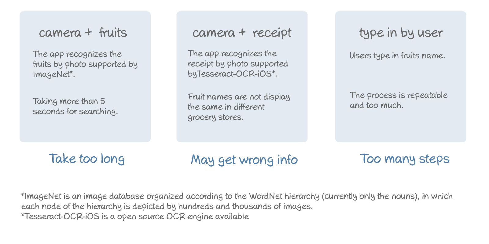

fruito
An self-published iOS fruits management app
Research, design, co-develop | March 2015-May 2015
-
Fruito is a self-published iPhone app. It keeps track of fruits purchase history and recommends various kinds of fruits in season. It also offers custom reminding system to help develop a habit of eating fruit regularly. Fruito greatly improves fruits management experience.
-
Open fruito for the first time.
-
Oops, the bananas’ gone bad again.
You must be familiar with this scenario, you pull the fruits out of your shopping bag into the refrigerator. However several days later, you find the rotten bananas and can’t tell when you bought them.
Not knowing how to store fruits correctly or when to eat them causes tons of fruits thrown away, and so are the time and the money you invest for them. -
Maping design problems
In terms of conveying knowledge of the fruits’ temper, such as their preferred storage locations and best enjoy period, I decided to create a mobile application. The core features of the app would be providing the right way to store fruits and keeping track of what fruits users have.
-

Early stage concepts
After mapping design problems to user behavior, I focused on simplifying the way to input fruits and interact with them.
-
Seasonal fruits makes a better solution.
Displaying seasonal fruits on the main interface recommends users to eat healthier and make it easier to input the fruits they bought. With this idea I developed a persona based on the profile of my target users. Then I picked a specific scenario to know how my solution can help.
-
Conveying the idea to design
According to the thumb zones map by Luke Wroblewski, I arranged the elements by using frequancy.
Since I intended to have the interface clear and words-less, I kept the shape and colors of real fruits and which gave me a lot of headache finding the perfect color scheme.
UI of version 1.0
Interactive prototype build with InVision
-
If the eatable time is not accurate,
it is useless.Since the fruits get rotten for lots reasons, the inaccurate eatable time made adjusting initial status of fruits useless rather than playful. Based on A/B testing, people prefer not have that feature than setting the time themselves. So I deleted that feature and set a step back to dig deeper about the connection of every steps.
Creating a new tool from the old ones to refine the design
Then I got no more luck with following design process or ux books. With the list of questions combined into user’s operations on the app and the scenarios more connections were analyzed to simplify the design.
work flow +operation +scenario
-
Designing with users
WholesFoods was a great place to find my target users. With their feedback, I simplified the interface and created a character user with facial expression like blinking, opening mouth, chewing that users can interact with.
UI of version 2.0
-
Coming to real
I was lucky to have a developer on my back. Time difference didn’t bring us too much trouble with tools like Skype and Google Drive. Instead, with clear task priority and thinking as a developer/designer, we saved much time from waiting the other’ work and finished the app in 12 weeks. Then I set a responsive web for fruito and got a lot of valuable feedback on demo day. I was so glad that people love playing it and I have all my fruits eaten at the show!
website displaying on laptaop
website displaying on iPhone 6
It seems that pineapples have a lot of fans!
-
-
If you'd like to share your feedback about this project, comment it on Medium .